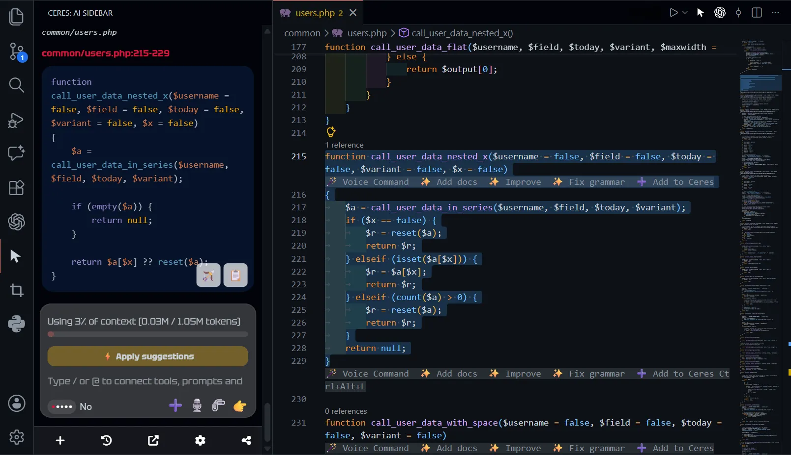
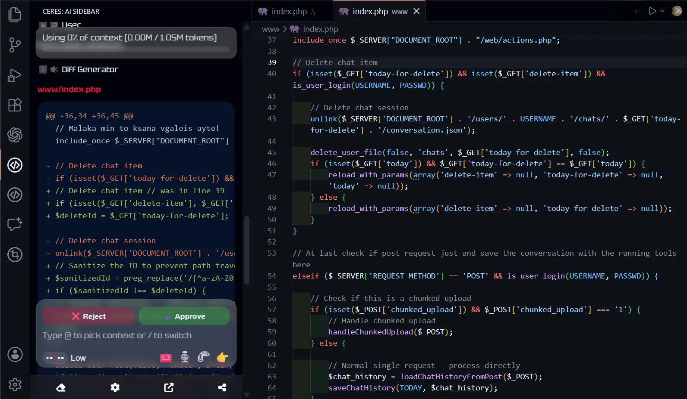

Smart context, total control
Use Navigation Mode to automatically find relevant workspace files, or turn it off to strictly use the blocks and files you manually select.

In case of heavy agents that eat up computer memory and use tokens, Ceres takes a different approach: a lite coding assistant powered by your favorite LLM that just works.
Don't want to wait for your AI agent to explore your entire repository just to change the next blocks? Ceres can do that because it interacts directly with the VS Code or JetBrains editor!
Use Navigation Mode to automatically find relevant workspace files, or turn it off to strictly use the blocks and files you manually select.

Use your voice to refactor functions and apply changes.
Speak naturally and request the necessary changes instead of writing.
See exactly what will change before anything is written to your project.
Apply changes without copy and paste directly to the source base - review before you approve!

Use GPT, Claude, Gemini, Mistral, Mercury, DeepSeek, Kimi, and other compatible models directly inside your code editor.
Connect your favorite LLM inside your IDE, whether it is a frontier model or a budget model.
Ceres is specially designed for lightweight and budget-friendly models.
Supported providers
Connect your preferred provider with your own API key.
 JetBrains
JetBrains
Keep Ceres open in Chrome and your IDE at the same time. Your conversation and current draft update automatically, so you can move between the browser and your code without starting over.
Use the browser to explore pages and collect useful information, then continue the same conversation beside your project in Visual Studio Code or a JetBrains IDE.
Live synchronization requires the browser extension to have access to the same local project folder. Available with Visual Studio Code and supported JetBrains IDEs.
Fix issues and grow your project with your rules without keeping agents running in the background.